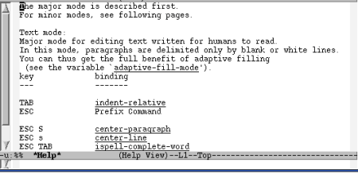
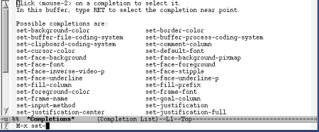

18. El Sistema de Ayuda de Emacs
Pág.Anterior | Índice | Pág.Siguente
Emacs es, tal vez, el editor de texto con el sistema de ayuda mas completo y accesible.
Trataremos este sistema de ayuda en tres grandes apartados:
18.1 Comandos de ayuda.
Pág.Anterior | Índice | Inicio Página | Pág.Siguente
Emacs dispone de multitud de comandos de ayuda, disponibles como comandos estandar de Emacs o como opciones de la combinación: C-h
Mediante los comandos de ayuda podemos encontrar información sobre comandos, variables, modos, combinaciones de teclas...etc. Veamos un resúmen de los comandos de uso más frecuente:
Ayuda sobre la Función Ayuda.
- Comando : C-h C-h o también: C-h ?
- Comando "largo" : M-x help-for-help <Enter>
Nos proporciona ayuda sobre el Sistema de Ayuda de Emacs.
Al ejecutar dicho comando se abre el buffer *Help*, en el que se nos describen todos los comandos de ayuda disponibles.
Información (breve) sobre comando asociado a una secuencia de teclas.
- Comando : C-h c
- Comando "largo" : M-x describe-key-briefly <Enter>
Si tecleamos una secuencia de teclas, nos informará, mediante un breve mensaje en el mini-buffer, del comando al que está asociada.
Para la secuencia de teclas: C-x C-f nos presentaria el siguiente mensaje:
Información (extensa) sobre comando asociado a una secuencia de teclas.
- Opción de menú : Help --> Describe --> Describe Key
- Comando : C-h k
- Comando "largo" : M-x describe-key <Enter>
Nos presentara en un buffer *Help*, la información el comando asociado a la combinación de teclas que hayamos introducido.
Para la secuencia de teclas : C-x C-f este comando nos proporcionaria la siguiente información:
Información la secuencia de teclas asociada a un comando..
- Comando : C-h w
- Comando "largo" : M-x where-is <Enter>
Nos informa de la asociación de teclas asociada a un determinado comando. Representa la acción "opuesta" a los comandos C-h c y C-h k.
Ejecutado C-h w se nos solicita, mediante un mensaje en el mini-buffer, que introduzcamos el nombre del comando. Introducido éste y , tras pulsar <Enter> , mediante otro mensaje en el mini-buffer se nos informa de la combinación de teclas y opciones de menú asociadas al comando.
Por ejemplo, para el comando find-file Emacs nos daria la siguiente información:
Información sobre funciones.
- Opción de menú : Help --> Describe --> Describe Function
- Comando : C-h f
- Comando "largo" : M-x describe-function <Enter>
Nos presentara en un buffer *Help*, la información sobre una función determinada. Para la introducción del nombre de la función podemos usar la propiedad de autocompletado de la tecla <Tab>
Información sobre variables.
- Opción de menú : Help --> Describe --> Describe Variable
- Comando : C-h v
- Comando "largo" : M-x describe-variable <Enter>
Igual que C-h f, pero referido a variables.
Información sobre modos activos.
- Opción de menú : Help --> Describe --> Describe Buffers Modes
- Comando : C-h m
- Comando "largo" : M-x describe-mode <Enter>
Nos proporciona información, en un buffer *Help*, sobre los modos activos en el buffer corriente
|  |
Información sobre las asociaciones de teclas activas.
- Opción de menú : Help --> Describe --> List Key Bindings
- Comando : C-h b
- Comando "largo" : M-x describe-bindings <Enter>
Nos proporciona información, en un buffer *Help*, sobre las asociaciones de teclas ,asociadas a comandos, vigentes en el buffer corriente.
Información sobre los 100 últimos caracteres tecleados.
- Comando : C-h l
- Comando "largo" : M-x view-lossage <Enter>
Nos muestra, en un buffer *Help*, los últimos 100 carácteres tecleados.
Información sobre mensajes aparecidos en el mini-buffer.
- Comando : C-h e
- Comando "largo" : M-x view-echo-area-messages <Enter>
Nos muestra, en un buffer *Help*, los mensajes aparecidos en el mini-buffer durante la presente sesión.
Información sobre la tabla sintáctica del buffer.
- Comando : C-h s
- Comando "largo" : M-x describe-syntax <Enter>
Nos muestra, en un buffer *Help*, la tabla sintactica del buffer corriente. Es un comando especialmente destinado a programadores Lisp
18.2 Comandos de Apropos.
Pág.Anterior | Índice | Inicio Página | Pág.Siguente
Otro tipo de comandos de ayuda son los denominados comandos apropos: Nos presentan una escueta información sobre comandos, variables, funciones ..etc, a partir de una búsqueda.
Con este tipo de comandos podemos utilizar expresiones regulares
La información que nos proporcionan los comandos apropos se visualiza en un buffer *Apropos*,
Información sobre comandos funciones y variables que contienen la expresión de búsqueda en su nombre.
- Comando "largo" : M-x apropos <Enter>
Nos muestra, en un buffer *Apropos*, los comandos funciones y variables cuyo nombre contiene la expresión de búsqueda.
Por ejemplo, para la expresión de búsqueda: find el resultado sería:
Información sobre los comandos que contienen la expresión de búsqueda.
- Opción de menú : Help --> Describe --> Apropos Commands
- Comando : C-h a
- Comando "largo" : M-x apropos-command <Enter>
Nos muestra, en un buffer *Apropos*, la relación de comandos que contienen ,en su nombre,la expresión de búsqueda.
Por ejemplo, el resultado para la expresión de búsqueda: find seria:
Información sobre las variables que contienen, en su nombre, la expresión de búsqueda.
- Opción de menú : Help --> Describe --> Apropos Variable
- Comando "largo" : M-x apropos-variable <Enter>
Nos muestra, en un buffer *Apropos*, la relación de variables que contienen la expresión de búsqueda.
Información sobre las variables que contienen la expresión de búsqueda en su configuración.
- Comando "largo" : M-x apropos-value <Enter>
Nos muestra, en un buffer *Apropos*, la relación de variables que contienen la expresión de búsqueda en su configuracion.
Información de la documentación del programa que contiene la expresión de búsqueda
- Comando "largo" : M-x apropos-documentation <Enter>
Nos muestra, en un buffer *Apropos*, la documentación del programa en la que aparece la expresión de búsqueda.
18.3 La Función de Autocompletado.
Pág.Anterior | Índice | Inicio Página | Pág.Siguente
la denominada Función de Autocompletado tiene una gran importancia en Emacs, dada la gran cantidad de opciones que nos suele presentar la aplicación.
El autocompletado opera en distintos ámbitos de Emacs: comandos, buffers, variables, archivos en un determinado directorio ...etc. y se encuantra activa en la mayoria de las ocasiones en que Emacs nos pide la introducción de "algo" en el mini-buffer.
Mientras se esté tecleando en el mini-buffer, pueden utilizarse tres teclas para instar a Emacs que complete el nombre que deseamos introducir:
- <Tab>
- Completa el nombre lo antes posible.También puede mostrar las posibles opciones en un buffer *Completions*,
- <Space>
- Completa el nombre después del próximo caracter de puntuación.También puede mostrar las posibles opciones en un buffer *Completions*,
- ?
- Lista las posibles opciones en un buffer *Completions* .
Cuando utilizamos alguna de las anteriores teclas antes de haber tecleado algún caracter ( o habiendo tecleado un número "insuficiente" de caracteres) , en todos los casos se noa abre el buffer *Completions*,
|  |
18.3.1 Personalización de Completions.
Pág.Anterior | Índice | Inicio Página | Pág.Siguente
la variable completion-auto-help determina si se abre automaticamente el buffer *Completions* cuando se utilizan la tecla <Tab> o la tecla <Space> en un prefijo ambiguo.
Por defecto, su configuración es t (true), por lo que la ventana de *Completions* se abrirá.
Si se configurara en nil , en lugar de *Completions* aparecerá el mensaje [Next char not unique] , durante unos segundos, en el mini-buffer.
La variable completion-ignored-extensions controla las extensiones, cuando se ejecuta el autocompletado en nombres de archivo.
La estructura de esta variable es:
( setq completion-ignored-extensions
(cons "extension" completion-ignored-extensions))
En el paréntesis interno, sustituiremos "extensions" por las extensiones que queremos que se ignoren cuando se ejecute el autocompletado. Por ejemplo, en la siguiente configuración se ignoraria la extensión .txt:
( setq completion-ignored-extensions
(cons ".txt" completion-ignored-extensions))
Configurando la variable completion-ignore-case podemos hacer que en la función de autocompletado se tenga o no en cuenta la caja tipográfica. Configurada en t se ignora la caja tipográfica; si se configura en nil si se tendrá en cuenta la caja tipográfica.